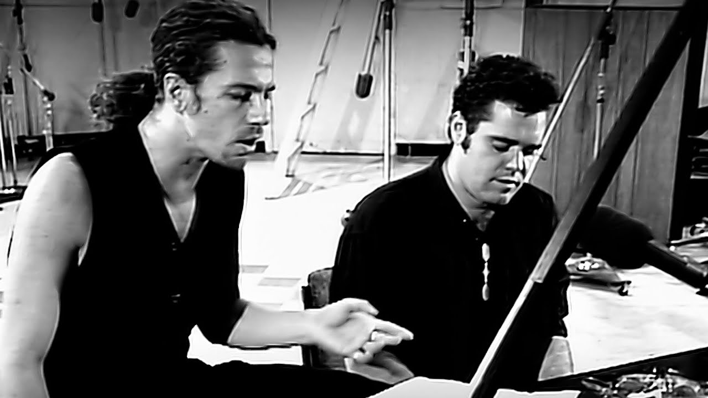
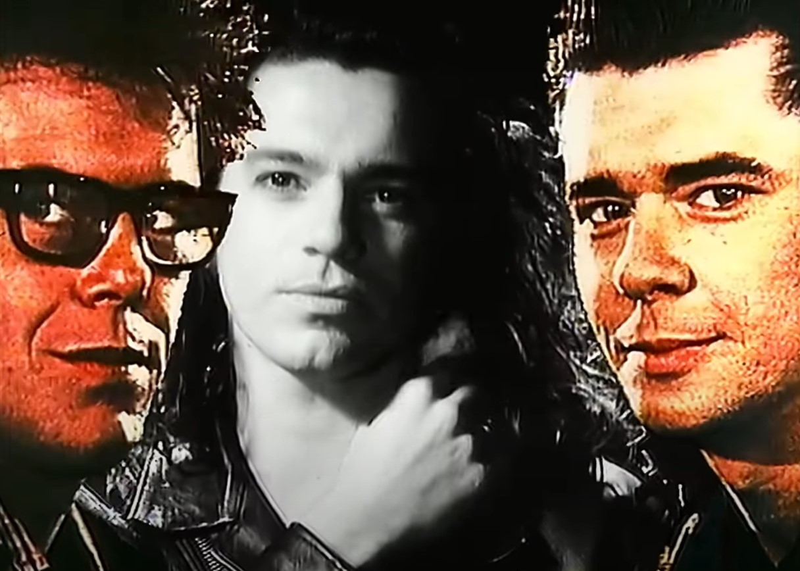
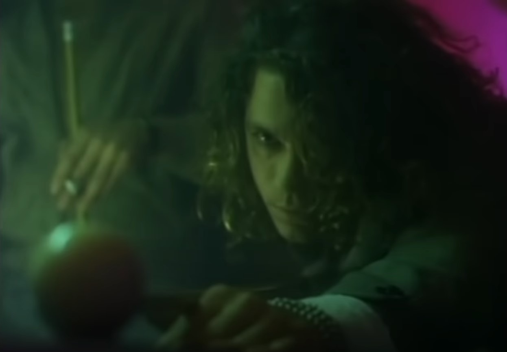

INXS is a rock band from the 1980s and 1990s. They were an Australian band. They
were
formed with
bassist Garry Gary Beers, keyboardist Andrew Farriss, drummer Jon Farriss, guitarist Tim Farriss,
saxophonist Kirk Pengilly, and finally lead singer and main lyricist Michael Hutchence.
INXS is one of my favorite bands. I like their sound. Each of their songs is like a work of art to me.
When I was looking at avatars to pick from, I saw some that seemed like they would be fun, but when I saw
INXS on the list, I knew they were the best choice for me.
INXS was around and popular up until the lead singer, Michael Hutchence's death in 1997. Michael
Hutchence was using drugs and alcohol at that time,
which can put people in very dark places. As a result, Michael Hutchence committed
suicide by hanging himself. Kurt Cobain,
from the band Nirvana, is a good example of drug-related tragedy; he struggled with heroin addiction,
and
committed suicide too. INXS has still been making music after his death with other replacement
musicians.
Songs
Mystify

Still from music video Mystify
This song was written in 1987. It is my favorite INXS song. I found this song
and the
guitar riffs in it
to be an inspiration when I first started playing electric guitar. What really made it cool for me is
that
the guitar the main guitarist used is the same type as my first professional guitar I bought. It is
called
a maple necked guitar. Now I own three
professional guitars, each one is made of a different material and has a different sound than the
others.
Mediate
This song is one of my favorites from when I was in high school. It was written in 1987. It has a
mysterious feel, kind of surreal like. Michael Hutchence rhymes on words that end in ate for the
couse of the whole song. It reads like a poem.
The saxophonist is pretty good in his solos as well. Once again, very good musicianship.
Need you Tonight

Need You Tonight music video
This is the song most people probably identify with when they hear the name INXS. It was written in
1987.
It was played on the radio
more than most of
their songs. It was number one on the Billboard Hot 100. It makes me think of skyscrapers in a
downtown
city somewhere. It also has a favorite lyric of mine, You're one of my kind. The music video
also
shows
off Michael Hutchence's skill as a dancer; he's pretty good. He
moves in an expressive way to the music and goes along with the beat well.
More Songs

Devil Inside music video
I love music, so it is hard for me to stop talking about it sometimes, but here
are some
more songs. All
of these
are kind of my favorite too, but not as much as in the previous section.
Devil Inside
Never Tear Us Apart
Bitter Tears
New Sensation
Devil Inside is one of my favorite music videos. It opens with Michael Hutchence shooting pool,
and makes the sound of a ball clicking against another ball. One of the things I admire about INXS is
that
they have multiple solid songs. I write music too, and from
a musician's
stand point, they did an excellent job. It is hard to come up with songs, but it is even harder
to
come up with
lyrics, and they did that well. Every song they wrote is good material. Their music videos are cool too,
lots of talent in INXS.